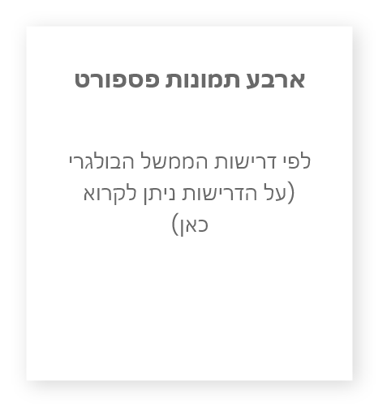
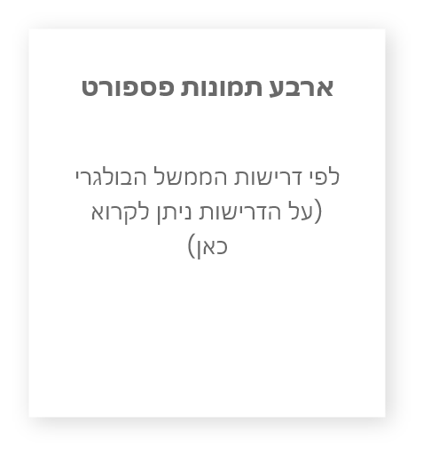

השבת אזרחות בולגרית לילידי בולגריה
בדיקת זכאות לאזרחות בולגרית לילידי בולגריה שאיבדו אותה עם העלייה לארץ - על פי השינוים האחרונים לחוק האזרחות הבולגרי, זכאים יהודי בולגריה שעזבו אותה בתקופת ה"עליה הגדולה" בין אפריל 1948 לנובמבר 1950 להחזרת אזרחותם הבולגרית. המסמכים הנדרשים טרם הגשת הבקשה לקבלת דרכון בולגרי:
 
